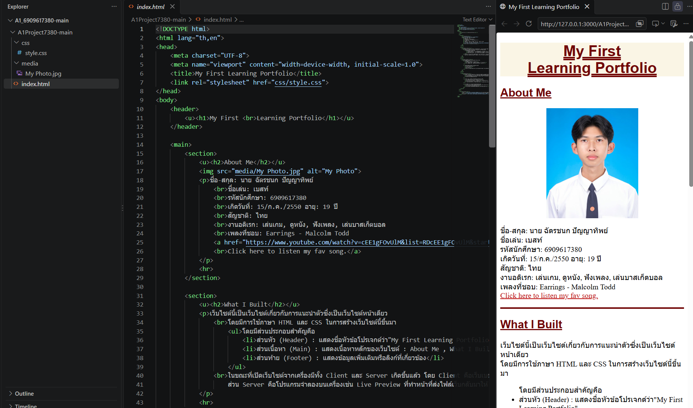

About Me

ชื่อ-สกุล: นาย ฉัตรชนก ปัญญาทิพย์
ชื่อเล่น: เบสท์
รหัสนักศึกษา: 6909617380
เกิดวันที่: 15/ก.ค./2550 อายุ: 19 ปี
สัญชาติ: ไทย
งานอดิเรก: เล่นเกม, ดูหนัง, ฟังเพลง, เล่นบาสเก็ตบอล
เพลงที่ชอบ: Earrings - Malcolm Todd
🎵 Click here to listen my fav song.
Portfolio Items
Title: CS100 A1:My First Learning Portfolio
Type: Course Assignment
Date: 30 Aug 2026
Role: Student Program Developer
Description: พัฒนาเว็บไซต์Learning Portfolio หน้าเดียวด้วย HTML และ CSS
skills: HTML, CSS, Semantic HTML
Reflection: ตอนที่ทำผมเจอปัญหา คือ
ต้องการวางคลิปเพลงที่ชอบแต่เมื่อวางไปแล้วดันขึ้นว่า"This video is unavailable"
ซึ่งผมคิดว่าอาจจะเป็นเพราะเจ้าของช่องเขาตั้งค่าไม่อนุญาตให้นำไปฝังแสดงผลบนเว็บไซต์อื่น
ผมเลยแก้โดยการนำลิงก์ไปวางแทนและเมื่อคลิกที่ลิงก์ก็จะสามารถฟังเพลงได้ตามปกติ
และผมรู้สึกว่ามันดูไม่รกด้วย
ผมได้เรียนรู้เรการใช้ HTML และ CSS ในการสร้างเว็บไซต์ การใช้
Semantic Tags
เพื่อจัดระเบียบเนื้อหา การใช้ CSS ตกแต่งเว็บไซต์ และการทำงานของระบบ Client และ
Server
สิ่งที่อยากปรับปรุงหากได้พัฒนาต่อ คือ
การจัดวางเนื้อหาให้สวยงามและเป็นระเบียบมากขึ้น การตกแต่งเว็บไซต์ด้วย CSS ให้ดูน่าสนใจ
และการเรียนรู้คำสั่งที่หลากหลายเพื่อเพิ่มประสิทธิภาพในการพัฒนาเว็บไซต์


Title: AORUS AI EXPERIENCE CAMPUS ROADSHOW 2026 — Future Ready with AI
Type: Activity
Date: 4 Sept 2026
Role: Participant
Description: เข้าร่วมเวิร์คช็อปเกี่ยวกับ AI ที่ชื่อว่า Ollama
ได้ฟังประสบการณ์จากวิทยากรและได้ทดลองใช้ Ollama ในการสร้าง AI ของตัวเอง
skills: AI Fundamentals, Active Learning, Hands-on Experimentation
Reflection: ผมได้เข้าร่วมเวิร์กช็อปเกี่ยวกับ AI ที่ชื่อว่า Ollama
โดยได้ฟังประสบการณ์จากวิทยากรและทดลองใช้ Ollama
ทำให้ได้เรียนรู้วิธีการใช้งาน Ollama และการนำโมเดล AI มาใช้จริงแบบคร่าวๆ
ความท้าทายคือการทำความเข้าใจวิธีการทำงานและขั้นตอนการใช้งาน
ซึ่งผมก็ได้เรียนรู้จากการทดลองและคำแนะนำของวิทยากร ในอนาคตผมอยากศึกษาเกี่ยวกับ Ollama และ AI
เพิ่มเติม